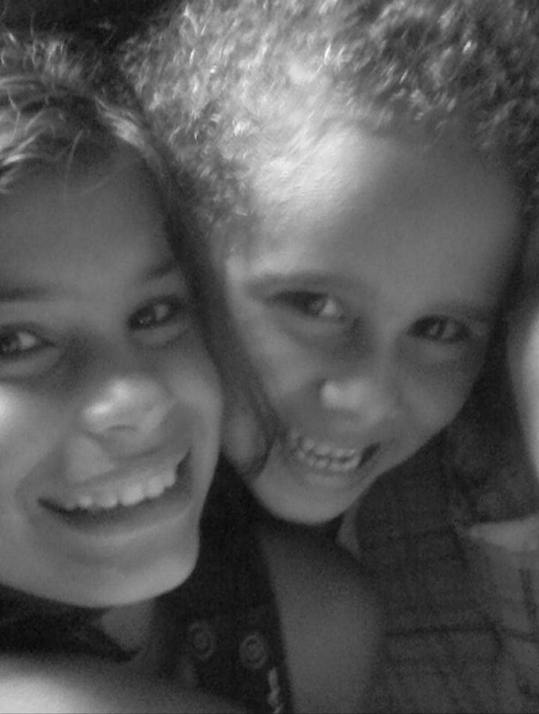
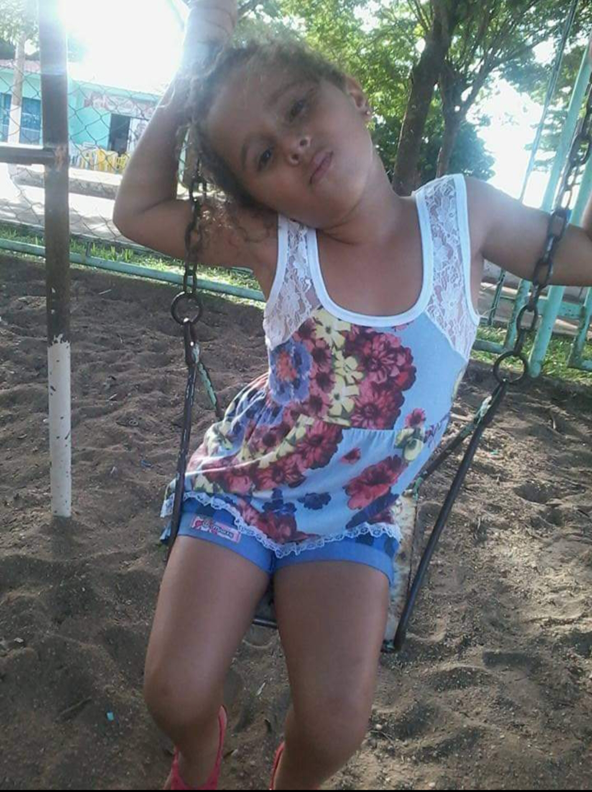
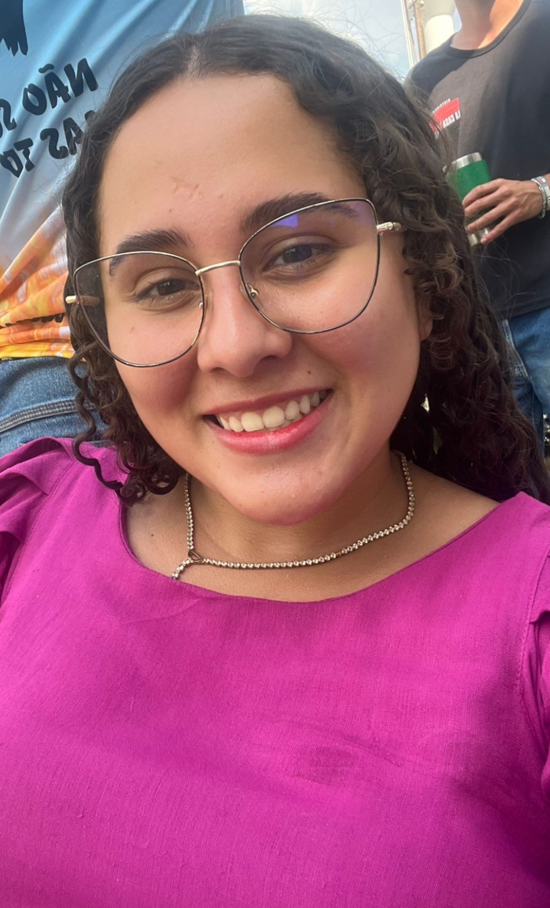

Eu tenho uma irmã por parte de mãe de 19 anos, a Cibely ela é casada e é nail designer.
Tenho um irmão por parte de pai de 31 anos, ele mora em Portugal está solteiro infelizmente😁.
Minha mãe se chama Cleide, ela é casada com meu padrasto que se chama Angelino.
Meu pai se chama Claudinei, infelizmente é solteiro eu acho😁.
Eu sou uma pessoa que não tem muita paciência, eu perco a paciência muito rapido, sou uma pessoa insuportável.
Nasci em Vilhena, no dia 24/12/2008 ás 02:00 da madrugada, no hospital Regional de Vilhena.
Tenho uma cicatriz na testa que eu fiz quando tinha uns 3 anos, esse foi o dia que eu mais dei trabalho para miha mãe, fui levada para o hospital até ai eu tava de boa, mas na hora que foram dar os pontos minha mãe fala que eu enloqueci, pois jogaram um pano branco em mim e deixaram só o buraco para eles dar os pontos.😐
 Tem gente que fala que eu não mudei nada, mas eu acho que mudei alguma coisa sim😊.
Tenho 4 cachorros, que minha mãe ama mais do que eu e minha irmã😑